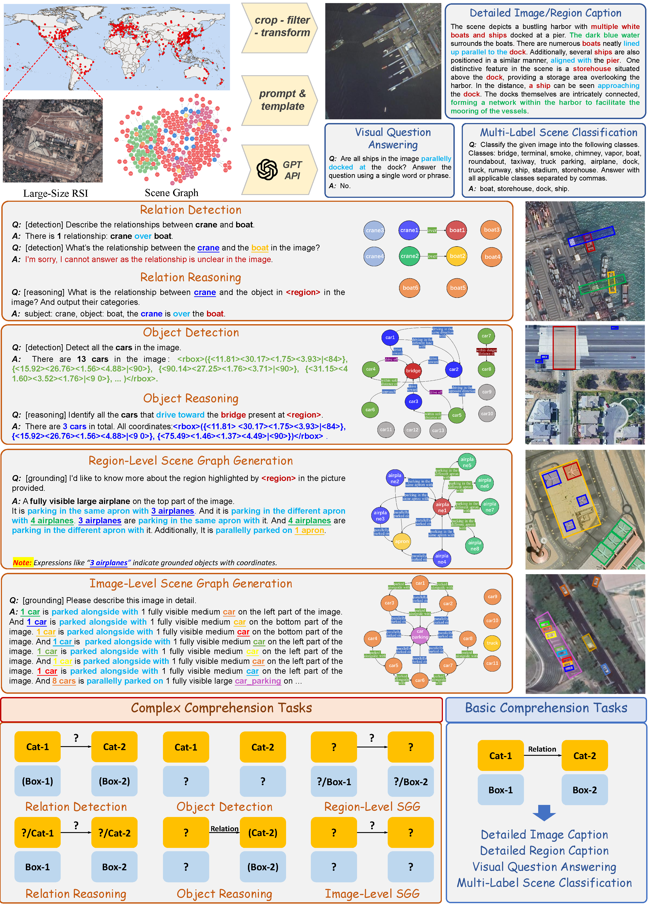

SkySenseGPT: A Fine-Grained Instruction Tuning Dataset and Model for Remote Sensing Vision-Language Understanding

Basic Tasks
Complex Tasks
FIT-RSRC Bench
Download Links
Baidu Drive:
Future opening soon
Google Drive:
Future opening soon